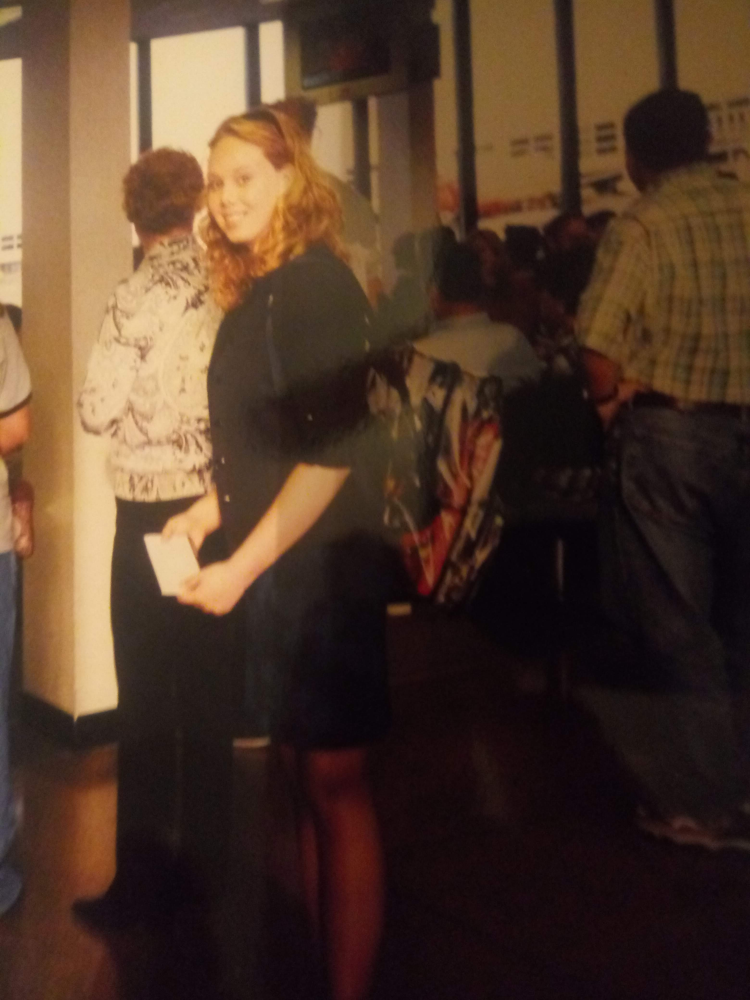
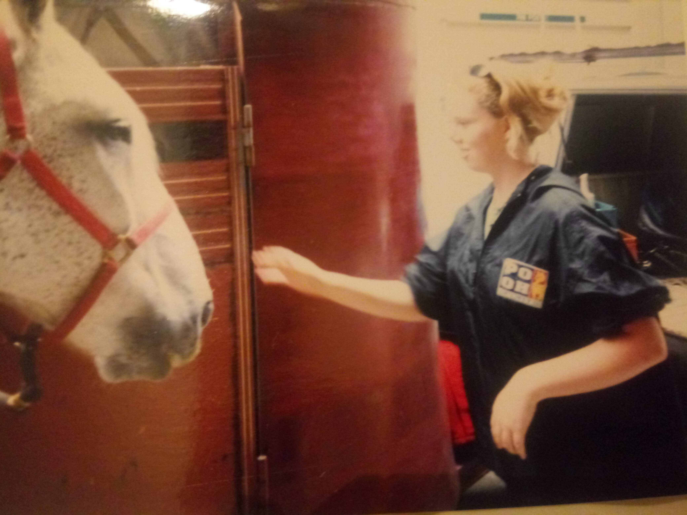

Who Is Jessica?
Jessica has spent more than 20 years incarcerated for a crime she maintains she did not commit.
Read Jessica's StoryHer life. Her story. Her fight for justice.
Jessica has spent more than 20 years incarcerated for a crime she maintains she did not commit.
Read Jessica's Story

Jessica is more than the case that put her in prison. This website was created to tell people about the person behind the story.
Here, you can learn about Jessica's life, what happened to her, and the ongoing effort to seek justice in her case.
After more than two decades of incarceration, Jessica's story deserves to be heard and examined.
This website brings together her story and information about the effort to obtain legal assistance.